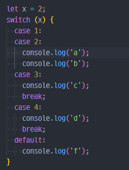

Javascript Quiz
Q1. Javascript에서 함수를 만드는 방법으로 옳은 것은?
function = myFunction()function myFunction()function:myFunction()def myFunction():
Q2. Javascript에서 myFunction 함수를 호출하는 방법으로 옳은
것은?
call function MyFunction()call myFunction()myFunction()
Q3. 다음 중 결과가 다른 하나는?
!truetrue && falsetrue || false!!false && (3 > 5)
Q4. 다음 중 결과가 다른 하나는?
3 !== '3'(8 / '2') !== 40 === false('1' + 2) === 12
Q5. 다음 중 if 문을 올바르게 작성한 것은 무엇인가?
if (x == 5)if (x == 5):if (x == 5) thenif x = 5
Q6. 자바스크립트에서 "i가 7이 아닐 때"를 의미하는 코드로 올바른 것은?
if (i <> 7) if (i !== 7)if (i =! 7) thenif i != 7:
Q7. 다음 중 삼항 연산자를 이용해 gender가 0이면 '남자', 0이 아니면
'여자'를 출력하는 코드로 옳은 것은? (gender 변수는 이미 선언되어 있다고
가정)
console.log(gender == 0 : '남자' ? '여자');-
console.log(gender == 0 ? '남자' : '여자');
console.log(gender == 0 : '여자' ? '남자');console.log(gender == 0 ? '여자' : '남자');
Q8. 다음 코드 실행 결과는?

b-
a
b
-
b
c
-
a
b
c
f